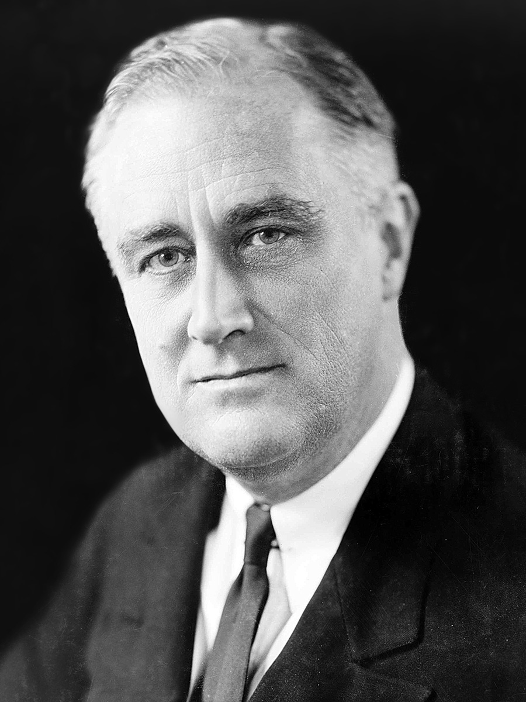

With the stock market crash of 1929 and the following Great Depression, many Americans came to expect more out of their government. Republican President Herbert Hoover’s approach to the early Depression was to let the market ride out the economic downturn, for the most part. This was seen as too little being done to improve the lives of Americans suffering from a great financial disaster.
Democratic nominee Franklin Delano Roosevelt ran for the presidency in 1932 on a platform of a more active government. Between the New Deal and the execution of World War II, many Americans came to believe that the government could and should do big and positive things.

The new Democratic coalition lasted roughly from 1932 to 1968 and was supported by:
This coalition began to break apart under the pressures involved with the Vietnam War and Democratic support for civil rights bills in the mid-1960s.